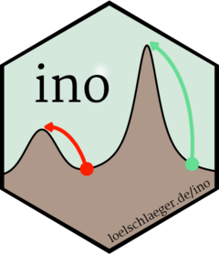

Function reference
-
Nop - Nop Object (R6 Class)
Functions
The following functions to demonstrate numerical optimization are included in the package.
-
f_ackley() - Ackley function
-
f_beale() - Beale function
-
f_easom() - Easom function
-
f_ll_hmm() - Log-likelihood function of a Gaussian-hidden Markov model
-
f_ll_mnp() - Log-likelihood function of the (normally mixed) multinomial probit model
-
f_matyas() - Matyas function
-
sim_hmm() - Simulate a time series from a Gaussian-hidden Markov model
-
sim_mnp() - Simulate data from a (normally mixed) multinomial probit model
-
hmm_ino - Example application to HMM likelihood
-
mixture_ino - Example application to mixture likelihood
-
probit_ino - Example application of to probit likelihood
-
is_TRUE_FALSE() - Check for proper boolean
-
is_count() - Check for proper count
-
is_index_vector() - Check for proper index vector
-
is_name() - Check for proper name
-
is_name_vector() - Check for proper name vector
-
is_number() - Check for proper number
-
is_proportion() - Check for proper proportion
-
is_time_limit() - Check for proper time limit
-
build_initial() - Unified function call for initial parameter specifications
-
filter_results() - Filter optimization results
-
inoino-package - ino: Analysis of Initialization for Numerical Optimization
-
simplify_results() - Simplify optimization results
-
standardize_argument() - Standardize argument
-
subset_argument() - Subset argument
-
test_nop() - Test
Nopobject